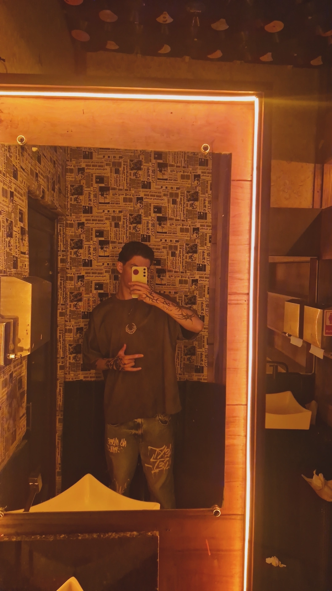

Sobre Mim

Meu nome é Guilherme Soster Santeti e moro em Passo Fundo, Rio Grande do Sul.
Atualmente curso ADS na Universidade de Passo Fundo (UPF). Escolhi essa área por ter interesse na área que esta em alta no momento.
Trabalho como Jovem Aprendiz na empresa Color Tintas atualemtente e também já trabalhei em uma loja de produtos naturais. Essas experiências me ajudam a desenvolver habilidades profissionais e pessoais.
Entre meus principais interesses estão marketing, Gosto empreendedorismo, academia, carros e motos.
Meu objetivo é continuar evoluindo profissionalmente, adquirir novos conhecimentos e construir uma carreira sólida na área da Programação.